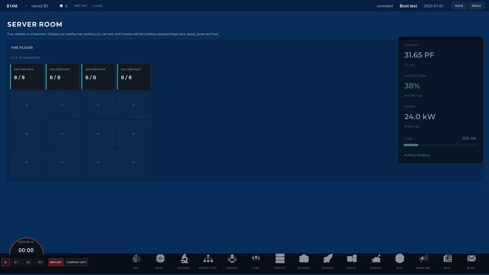
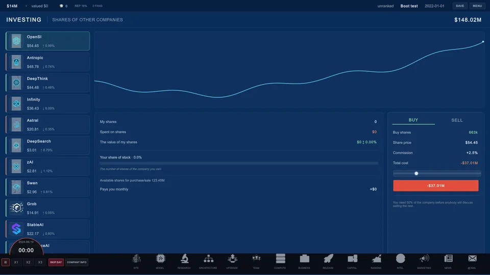
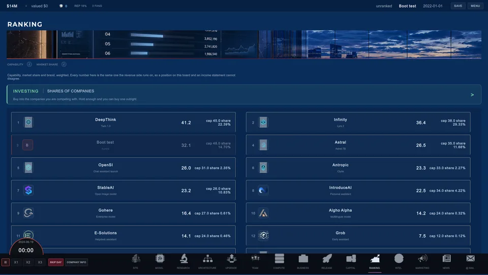
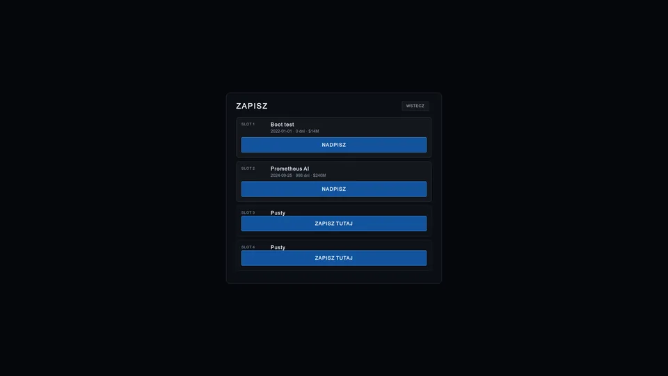
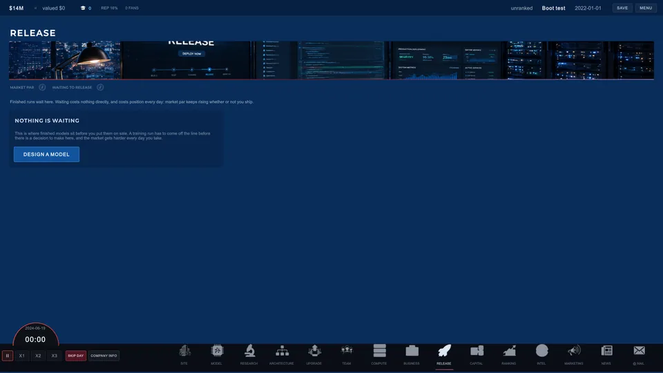

Unlock the option
Architectures, corpora, model types and infrastructure sit behind research. Cash helps. It does not erase prerequisite chains or calendar time.
January 2022. Twelve million dollars. No product. Train models, fund research and commit real money to compute while the frontier moves whether you are ready or not. The expensive decision is rarely just what to buy. It is when.

The first company view is deliberately modest: a desk, a bed, a living room, a garage and a cheap car. Later company growth is meant to become visible as well as numerical, with larger offices, staff and owned infrastructure replacing the starter setup.

Scaling Laws is built around decisions that consume both money and calendar. A better number is useful only if the company can afford the time it took to get there.
Architectures, corpora, model types and infrastructure sit behind research. Cash helps. It does not erase prerequisite chains or calendar time.
Choose the model, scale, data and compute budget. The creator shows projected capability, training time and the cash the run is expected to burn.
A finished run can sit on the shelf. Waiting may dodge a rival launch or buy time for an upgrade, but the market keeps moving while you wait.
Set pricing, manage free access, build brand and fund the next cycle. A company that ships one model and coasts is designed to fall behind.
The UI is still moving. The underlying systems already share one simulation: the same capability, market, research and company state drive the screens instead of separate decorative scores.

The staged creator separates foundation, scale, data, compute and review so each choice has room to explain what it changed. Capability, training time and cash burn reprice as the blueprint changes.

The technology tree gates what the company can use. Money can fund a programme, but it cannot buy back months already lost.

Spread a research programme across sparsity, throughput, quality, serving cost and reasoning. A cheap rushed programme carries more outcome variance, and chasing every direction at once dilutes depth.

Price, free access, brand and model age all affect demand. Several models can be live at once, so a specialist or lower-priced product can coexist with the flagship.
Competitors are agents rather than a static leaderboard. Some delay a release when better silicon is close, some rush when the player gets too far ahead, and the field keeps improving between launches.
Renting is flexible and expensive. Owning can be cheaper per FLOP, but the hardware ages, sits on the balance sheet and depends on CPUs, memory and fabric feeding it properly.
Intel can warn about hardware launches, price collapses, supply squeezes or a rival holding back. The cheaper desk sounds more certain than its real accuracy deserves.

Four cabinet types, and they are not a ladder. More slots cost more to cool, the cheapest frame leans on the room and the immersion tank carries its own fluid. Cabinets do not age but chips get hotter, so a room filled in 2023 and never revisited is quietly throttling by 2027 and the fix costs a slot.

Share prices come from each lab's own published capability on the day, so the board moves for reasons you can point at. Hold half a company and you can negotiate for the rest. Buying one hands over three quarters of their following and their newest model, never all of it.

Fourteen labs with dated histories. Open one and you can see how they feel about you, who works there, and what it would take to move them. Every approach is recorded, whether or not it is traced back.

Escape opens settings, statistics and four campaigns. Overwriting one takes two clicks because nothing comes back. Autosave counts real minutes rather than game speed, and it is off by default: a game that writes to disk mid-decision has made a choice for you.
Four tiers of paid story about a rival, and every tier is louder, dearer and more likely to be traced back than the last. Being caught costs more than landing it would have gained. A lawsuit works the same way from the other end: the more you demand, the less likely you are to get it.
Once the company is worth enough, somebody offers to buy it. Accepting ends the campaign with a figure attached, which is the only good ending the game has. It is blocked outright while a sovereign compute programme is outstanding, because a government does not watch its money be sold to a competitor.
Scaling Laws uses published scaling-law behaviour and public hardware data as reference points, then turns them into a game economy. Estimates and future projections are meant to stay labelled as estimates.
Compute-optimal training sits around twenty tokens per parameter in the model used by the game. Undertraining or overtraining makes the same compute budget buy a worse result.
Ten times the effective compute buys about ten capability points on the game's relative scale. The frontier therefore keeps moving even when the player's last model felt expensive.
Owned hardware depreciates with time and again when meaningful successor generations arrive. Buying too early can leave capital trapped in a fleet the market has already passed.
Engineering notes and source are public in the Scaling Laws repository.
Captured from the released build. Every number in these shots came out of the simulation rather than a mockup.
Eight stages, and the scale page decides most of the outcome. Parameters against tokens on a logarithmic belt, so half of optimal and twice optimal sit the same distance from the middle. Undertrain or overtrain and the same bill buys you a worse model.
A house with a garage, one desk on the mezzanine and a car outside. The company is a place before it is a spreadsheet, and the founder walks to the parts of it you send them to.
Fill a server cabinet completely and the heat throttles everything in it. Swap one accelerator for a fan and the same cabinet delivers more. Cabinets do not age, chips get hotter, and a room you filled in 2023 is quietly losing you throughput by 2027.

Shipping an update does not move everybody onto it. A quarter take the new version on day one. The rest drift across at twelve per cent of the remaining gap per day, and if the new version is worse they never come at all.
Each carries a dated history you can open, a share price you can buy into and a staff list you can make offers against. Three of them come apart during the campaign, over the same exposures that can end your company.
Version 0.1.0 plays end to end, from the cold open in January 2022 to a company that is either still trading in 2026 or is not. It is an alpha and the page says so: the art is partial and several screens are still plain. What is listed below is in the build you can download today.
These are development screenshots, not store mockups. Layout, spacing and art will continue to move as systems leave prototype state.


Scaling Laws is being built openly by Marcin "HCK" Firmuga under HCK Labs. The source, engineering notes and development history stay visible while the game changes.